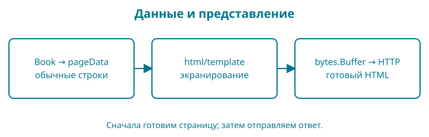

12. HTML-шаблон превращает каталог в страницу
В этой главе каталог получает заголовки, ссылки, цены и простой стиль. Мы сохраняем сервер и правила книги, меняем представление ответа. Внешний сборщик, JavaScript и CSS-фреймворк не нужны.
Перед началом объясните, почему заголовок ответа устанавливают раньше тела и почему обработчик возвращает 404 для неизвестной книги. Если не получается, повторите тест маршрутов из главы 11.

Файлы и быстрый результат
Откройте examples/12-templates. При ручном переходе скопируйте главу 11, согласованно замените 11-http на 12-templates в go.mod и импортах. В internal/web замените web.go, добавьте templates.go, template_test.go и footer_test.go; прежний web_test.go сохраняется. Скопируйте дерево web из контрольной точки: assets.go, templates/layouts, templates/pages, templates/partials и static/css/style.css. Остальные пакеты не меняют поведения.
go test ./...
go run ./cmd/shop
Откройте http://127.0.0.1:8080/: увидите две карточки. В меню пока только eGopher: корзина появится в главе 13, регистрация — в главе 19, вход — в главе 20. Ссылки добавляем вместе с работающими маршрутами; отсутствие будущего пункта здесь не ошибка. Переход по названию открывает отдельную страницу книги. Адрес отсутствующей книги по-прежнему даёт 404. Сервер останавливается Ctrl+C.
Минимум HTML для чтения шаблона
HTML размечает смысл документа. <h1> — главный заголовок страницы, <article> — самостоятельная карточка, <a href="..."> — ссылка, <p> — абзац. Закрывающий тег начинается с </. Атрибуты внутри открывающего тега задают свойства элемента. HTML не является кодом Go.
lang="ru" помогает средствам чтения выбрать язык. charset="utf-8" задаёт кодировку. viewport позволяет странице учитывать ширину экрана. Область <main> отделяет основное содержимое, ссылка на #content позволяет перейти к нему с клавиатуры. Сначала смысл и порядок чтения, затем оформление.
Сначала одна подстановка
Не будем одновременно разбирать файлы layout, встраивание и каталог. Откройте labs/01-template/main.go в контрольной точке; команда запускается рядом с go.mod этой главы.
package main
import (
"fmt"
"html/template"
"os"
)
type Page struct{ Title string }
func run() error {
page, err := template.New("card").Parse("<h1>{{.Title}}</h1>\n")
if err != nil {
return err
}
return page.Execute(os.Stdout, Page{Title: "<Go>"})
}
func main() {
if err := run(); err != nil {
fmt.Fprintln(os.Stderr, err)
os.Exit(1)
}
}
go run ./labs/01-template
<h1><Go></h1>
template.New("card") создаёт набор с именем card. Parse разбирает текст шаблона и может вернуть ошибку; Execute исполняет его с конкретными данными и записывает результат в os.Stdout. Разбор и исполнение — два разных шага. Запись {{.Title}} читает поле текущего значения Page, переданного вторым аргументом Execute.
Мы передали строку <Go>. Результат содержит < и >: HTML-сущности для знаков < и >. Браузер покажет название текстом, а не новым HTML-тегом. Терминал печатает сами символы разметки: он не является браузером. Опыт: замените название на Go & SQL; ожидайте Go & SQL между тегами. Верните исходное значение после проверки.
Ошибка неизвестного поля может проявиться при исполнении, когда появились конкретные данные: попробуйте {{.Missing}}. Ошибка незавершённого действия вроде {{ обнаружится при разборе. Сохраните рабочий вариант: позже обработчик должен различать эти стадии и не отправлять половину успешного ответа.
Затем каркас и повторяемая часть
define объявляет именованный шаблон, а template исполняет его. Имя в кавычках — ключ в наборе шаблонов, оно не обязано совпадать с именем файла. Последняя точка передаёт текущие данные вложенному шаблону.
package main
import (
"fmt"
"html/template"
"os"
)
type Page struct{ Title string }
func run() error {
source := `{{define "base"}}<main>{{template "content" .}}</main>{{template "footer" .}}
{{end}}{{define "content"}}<h1>{{.Title}}</h1>{{end}}{{define "footer"}}<footer>eGopher</footer>{{end}}`
page, err := template.New("pages").Parse(source)
if err != nil {
return err
}
return page.ExecuteTemplate(os.Stdout, "base", Page{Title: "Go"})
}
func main() {
if err := run(); err != nil {
fmt.Fprintln(os.Stderr, err)
os.Exit(1)
}
}
go run ./labs/02-layout
<main><h1>Go</h1></main><footer>eGopher</footer>
Сначала ExecuteTemplate выбирает base, он вызывает content и footer. Только content читает Title; подвал здесь содержит постоянную подпись. Измените Page.Title: изменится заголовок, каркас и подвал сохранятся. Затем уберите точку из {{template "content" .}} и наблюдайте потерю данных во вложенном шаблоне. Восстановите передачу точки. Так мы проверяем назначение аргумента, а не запоминаем скобки наизусть.
В магазине эти три объявления будут разделены по файлам layouts, pages и partials. embed решает доставку этих файлов вместе с программой, а CSS — их отображение в браузере. Они не меняют уже изученный принцип «данные → исполнение шаблона → HTML». Ниже добавляем их по отдельности.
Возвращаемся к каталогу
Содержимое страницы каталога:
{{define "title"}}{{.Title}}{{end}}
{{define "content"}}
<h1>{{.Title}}</h1>
{{range .Books}}
<article>
<h2>
<a href="/books/{{.ID}}">{{.Title}}</a>
</h2>
<p>{{money .PriceMinor}} {{.Currency}}</p>
</article>
{{else}}
<p>Каталог пока пуст.</p>
{{end}}
{{end}}
Двойные фигурные скобки — действия шаблона. {{.Title}} берёт поле Title текущих данных. {{range .Books}} проходит по книгам; внутри цикла точкой становится текущая книга. {{else}} показывает текст при пустом срезе. {{end}} завершает блок. Это отдельный язык html/template; слова похожи на Go, но правила принадлежат шаблонизатору.
{{money .PriceMinor}} вызывает зарегистрированную функцию форматирования. Цена хранится целым числом минимальных единиц; деление на 100 даёт целую часть, остаток % 100 — дробную. Формат %02d дополняет дробную часть слева нулём. Из 105 получаем 1.05. Область применения этого помощника — неотрицательные цены нашей валюты с двумя дробными знаками; это не универсальная библиотека денежных расчётов.
Встраивание и подготовка ответа
Публичные ресурсы сразу разделим по назначению, чтобы рост магазина не превратил static в общий склад:
web/static/
brand/ логотип и фирменные знаки
css/style.css таблица стилей
js/ сценарии браузера, когда понадобятся
images/ общедоступные изображения
Сейчас используются CSS и фирменные изображения. В папках js и images лежит пустой .gitkeep: Git хранит файлы, а не пустые директории, поэтому этот обычный файл сохраняет структуру в репозитории и комплекте примеров. Это соглашение проекта, не специальная команда Git. JavaScript пока не нужен; пустая папка не означает, что нужно писать лишний сценарий.
brand содержит постоянную айдентику магазина, images — общедоступные иллюстрации и обложки товаров. Полные платные книги, базы, ключи и пользовательские загрузки сюда не относятся. Добавление файла на диск само по себе не открывает ему HTTP-адрес: сервер явно обслуживает /assets/css/style.css и перечисленные ниже фирменные изображения. Путь на диске — web/static/css/style.css; URL выбирает маршрутизатор. При добавлении новых типов ресурсов расширяем обработку осознанно, без выдачи списка директорий.
Логотип и маленькая иконка решают разные задачи
В web/static/brand/gopher-cart.png лежит логотип: гофер с тележкой по мотивам обложки нашей книги. Это PNG с прозрачным фоном, 256 × 256 пикселей. В шапке он показывается размером 80 × 80; запас разрешения помогает на плотных экранах. Для крошечной вкладки подробная тележка не подходит: отдельная иконка показывает только узнаваемую голову гофера.
favicon.ico содержит два размера, 16 × 16 и 32 × 32. Их исходные PNG тоже лежат в brand. apple-touch-icon.png — квадрат 180 × 180 с белым фоном для сохранения сайта на домашнем экране совместимого устройства. Это иконка, не установка полноценного приложения; манифеста и работы без сети здесь нет. Исходные большие изображения и описание их подготовки находятся в материалах редакции, а в контрольной точке — готовые небольшие файлы.
В web/templates/layouts/base.html элементы link с rel="icon" и rel="apple-touch-icon" сообщают браузеру назначение файлов. В web/templates/partials/header.html обычный img загружает логотип. Атрибуты width и height резервируют место до загрузки. Ссылка логотипа получает доступное имя через aria-label="{{brand_name}} — на главную". Поэтому у изображения оставлен пустой alt="": программа чтения экрана использует имя ссылки и не повторяет его. Отдельный элемент nav с aria-label="Главное меню" объединяет текстовые ссылки меню. Функция brand_name возвращает короткое название eGopher; шапка, подвал и название вкладки используют одну функцию. При смене бренда достаточно изменить это значение в internal/web/templates.go.
Добавьте internal/web/brand.go и вызов registerBrand(mux) сразу после создания маршрутизатора. Функция регистрирует только три разрешённых адреса; содержимое произвольной папки через HTTP не раскрывается. serveImage принимает байты и тип содержимого: image/png для PNG и image/vnd.microsoft.icon для ICO. w.Write(data) передаёт двоичные байты без преобразования в текст. Здесь результат единственной записи игнорируется явно: при оборванном соединении повторная запись ответа не восстановит клиента.
package web
import (
"net/http"
"github.com/dake-edu/gopher-shop/book/examples/12-templates/web"
)
func registerBrand(mux *http.ServeMux) {
serveImage(mux, "/assets/brand/gopher-cart.png", "image/png", assets.Logo)
serveImage(mux, "/favicon.ico", "image/vnd.microsoft.icon", assets.Favicon)
serveImage(mux, "/assets/brand/apple-touch-icon.png", "image/png", assets.TouchIcon)
}
func serveImage(mux *http.ServeMux, path, contentType string, data []byte) {
mux.HandleFunc("GET "+path, func(w http.ResponseWriter, r *http.Request) {
w.Header().Set("Content-Type", contentType)
_, _ = w.Write(data)
})
}
Логотип и иконки встраиваются через отдельные переменные []byte в пакете assets; после замены изображения требуется пересборка программы. Проверьте логотип в шапке и откройте /favicon.ico напрямую. Если вкладка показывает прежний значок, учтите кеш браузера: перезагрузите страницу или проверьте её в новом профиле. Тест TestBrandAssetsAndClosedDirectory сравнивает ответы с встроенными файлами и проверяет 404 для неизвестного файла и каталога.
package web
import (
"bytes"
"fmt"
"net/http"
"github.com/dake-edu/gopher-shop/book/examples/12-templates/internal/catalog"
)
type pageData struct {
Title string
Books []catalog.Book
}
func money(minor int64) string { return fmt.Sprintf("%d.%02d", minor/100, minor%100) }
func New(books []catalog.Book) http.Handler {
snapshot := append([]catalog.Book(nil), books...)
page := pageTemplate("home")
render := func(w http.ResponseWriter, data pageData) {
var out bytes.Buffer
if err := page.Execute(&out, data); err != nil {
http.Error(w, "Не удалось показать страницу", http.StatusInternalServerError)
return
}
w.Header().Set("Content-Type", "text/html; charset=utf-8")
_, _ = out.WriteTo(w)
}
mux := http.NewServeMux()
registerBrand(mux)
mux.HandleFunc("GET /{$}", func(w http.ResponseWriter, r *http.Request) {
render(w, pageData{Title: "Каталог", Books: snapshot})
})
mux.HandleFunc("GET /assets/css/style.css", func(w http.ResponseWriter, r *http.Request) {
w.Header().Set("Content-Type", "text/css; charset=utf-8")
fmt.Fprint(w, styleSource)
})
mux.HandleFunc("GET /books/{id}", func(w http.ResponseWriter, r *http.Request) {
for _, book := range snapshot {
if book.ID == r.PathValue("id") {
render(w, pageData{Title: book.Title, Books: []catalog.Book{book}})
return
}
}
http.NotFound(w, r)
})
return mux
}
В верхнеуровневом пакете web объявлено имя assets, чтобы его не путать с обработчиками. Директива //go:embed templates static включает дерево файлов в embed.FS. Это встроенная файловая система только для чтения. Путь считается от файла с директивой; выйти наверх через .. нельзя. Поэтому assets.go лежит рядом с папками ресурсов. Отдельная строковая переменная Style встраивает CSS для простого обработчика одного файла.
// Package assets contains the public presentation files embedded in the binary.
package assets
import "embed"
//go:embed templates static
var Files embed.FS
//go:embed static/css/style.css
var Style string
//go:embed static/brand/gopher-cart.png
var Logo []byte
//go:embed static/brand/favicon.ico
var Favicon []byte
//go:embed static/brand/apple-touch-icon.png
var TouchIcon []byte
Каркас документа хранится в layout. {{define "base"}} объявляет именованный шаблон, {{template "content" .}} исполняет другой шаблон и передаёт ему текущие данные. Partials — небольшие повторяющиеся части, например шапка и подвал. Это соглашение об устройстве файлов, поддержанное средствами стандартной библиотеки, а не сторонний движок.
{{define "base"}}
<!doctype html>
<html lang="ru">
<head>
<meta charset="utf-8">
<meta name="viewport" content="width=device-width, initial-scale=1">
<title>{{template "title" .}} — {{brand_name}}</title>
<link rel="icon" href="/favicon.ico" sizes="16x16 32x32">
<link rel="apple-touch-icon" href="/assets/brand/apple-touch-icon.png" sizes="180x180">
<link rel="stylesheet" href="/assets/css/style.css">
</head>
<body>
<a href="#content">Перейти к содержимому</a>
{{template "header" .}}
<main id="content">{{template "content" .}}</main>
{{template "footer" .}}
</body>
</html>
{{end}}
{{define "header"}}
<header>
<a class="brand" href="/" aria-label="{{brand_name}} — на главную">
<img src="/assets/brand/gopher-cart.png" width="80" height="80" alt="">
</a>
<nav aria-label="Главное меню">
<a href="/"{{if nav_active "catalog"}} aria-current="true"{{end}}>{{brand_name}}</a>
</nav>
</header>
{{end}}
Текущий год в общем подвале
Подвал показывает знак ©, текущий год и название магазина. © — HTML-сущность: браузер отображает её как ©. {{year}} и {{brand_name}} вызывают функции без аргументов; точки перед именами нет. В отличие от {{.Title}}, они не читают поля данных страницы. Поэтому один подвал работает и с каталогом, и позднее с библиотекой и административными страницами, даже если у них разные структуры данных.
{{define "footer"}}
<footer>
<p>© {{year}} {{brand_name}}</p>
<p>Учебный интернет-магазин.</p>
</footer>
{{end}}
Каждая страница определяет title и content. Для неё создаётся отдельный набор: общий layout, общие partials и ровно один файл страницы. Нельзя разобрать все страницы одним шаблоном: одинаковые имена content начнут заменять друг друга. ParseFS читает файлы из встроенного assets.Files; шаблон пути *.html выбирает partials. Имя страницы задаёт наш код при запуске, а не параметр URL. Подготовленные наборы не изменяются во время запросов.
package web
import (
"html/template"
"time"
assets "github.com/dake-edu/gopher-shop/book/examples/12-templates/web"
)
// Each page gets its own set: identical content names cannot replace another page.
// Call only during handler construction, before serving concurrent requests.
func pageTemplate(name string) *template.Template {
active := "account"
if name == "home" || name == "workshop" {
active = "catalog"
}
if name == "cart" || name == "order" || name == "payment" {
active = "cart"
}
if name == "cart" {
name = "home"
}
return template.Must(template.New("base").Funcs(template.FuncMap{
"nav_active": func(section string) bool { return section == active },
"money": money,
"year": func() int { return time.Now().Year() },
"brand_name": func() string { return "eGopher" },
}).ParseFS(
assets.Files, "templates/layouts/base.html", "templates/partials/*.html",
"templates/pages/"+name+".html",
))
}
var styleSource = assets.Style
template.FuncMap — таблица имён функций, доступных шаблону. Регистрируем money, year и brand_name через Funcs до ParseFS: иначе разбор остановится с ошибкой function "year" not defined. Функция brand_name возвращает название магазина; это значение можно изменить в одном месте для всех подвалов.
Пакет time входит в стандартную библиотеку. time.Now() читает текущее время, а метод .Year() возвращает год как int. Запись func() int { return time.Now().Year() } создаёт функцию без аргументов: её тело выполняется при вызове {{year}}, то есть при каждом формировании страницы. Мы передаём саму функцию, а не заранее вычисленный год. Поэтому работающий сервер автоматически покажет новый год после полуночи 1 января, без пересборки и перезапуска. Уже открытая вкладка обновится при следующей загрузке страницы.
Здесь используется локальная временная зона процесса сервера. На сервере с UTC год сменится по UTC; если магазину нужен календарь определённого региона, временную зону следует задать явно. Это отдельное решение, а не свойство языка шаблонов.
Проверьте: запустите магазин и найдите © с текущим годом внизу каталога и страницы книги. В footer_test.go один разобранный шаблон исполняется с тестовой функцией часов сначала для 2026, затем для 2027 года. Такая подмена проверяет смену значения без ожидания Нового года и без изменения системных часов. Числа в тесте — проверочные данные; в работающем магазине год берётся только из time.Now().Year().
При изменении встроенного HTML или CSS перезапустите go run ./cmd/shop. Встраивание не делает ресурсы секретными: браузеру передаётся результат HTML и публичный CSS. Платные файлы книги здесь хранить нельзя.
Новая запись append([]catalog.Book(nil), books...) создаёт копию элементов среза. []catalog.Book(nil) — пустой nil-срез нужного типа. Три точки после books передают элементы среза как отдельные аргументы append. Это краткая форма знакомой пары make и copy, а не «продолжение пропущенного кода». Исходный и новый срез не разделяют изменяемые элементы массива; вложенные ссылки внутри элементов, если появятся, требуют отдельного внимания.
template.FuncMap связывает имя money с нашей функцией. Функции регистрируются до Parse, чтобы имена были известны при разборе. template.Must проверяет результат разбора и аварийно останавливает запуск при ошибке встроенного шаблона. Это осознанная граница: неверный шаблон — дефект поставленной программы. Ошибки пользовательской формы позже будем возвращать как обычные ответы, без аварийной остановки.
При исполнении шаблона сначала пишем в bytes.Buffer — буфер в памяти. Если Execute вернул ошибку, можно ещё честно отправить статус 500. При немедленной записи в сеть часть успешной страницы могла бы уже уйти клиенту, и поменять статус стало бы поздно. После успешного исполнения ставим Content-Type: text/html; charset=utf-8 и переносим буфер в ответ. Ошибку последней сетевой записи уже нельзя исправить новым статусом; наблюдаемость таких ошибок добавим позднее.
pageData — данные конкретного представления. Мы не передаём шаблону весь сервер или будущую запись пользователя с паролем. Это делает границы страницы понятными.
Текст не должен становиться программой
html/template экранирует обычные строки с учётом места вставки. Если название содержит <script>, браузер должен увидеть текст, а не исполнить сценарий. Нельзя отключать защиту преобразованием пользовательского ввода в template.HTML. Такой тип означает доверенный HTML и снимает часть автоматических проверок.
Тестируем это и пустой каталог:
package web
import (
"net/http/httptest"
"strings"
"testing"
"github.com/dake-edu/gopher-shop/book/examples/12-templates/internal/catalog"
)
func TestEscapeAndEmptyCatalog(t *testing.T) {
cases := [][]catalog.Book{
nil,
{{ID: "go", Title: "<script>alert(1)</script>", Currency: "KZT"}},
}
for _, books := range cases {
w := httptest.NewRecorder()
New(books).ServeHTTP(w, httptest.NewRequest("GET", "/", nil))
body := w.Body.String()
if w.Code != 200 || strings.Contains(body, "<script>") {
t.Fatalf("unsafe response: %s", body)
}
if len(books) == 0 && !strings.Contains(body, "Каталог пока пуст") {
t.Fatal("missing empty state")
}
if len(books) > 0 && !strings.Contains(body, "<script>") {
t.Fatal("missing escaped title")
}
}
if money(105) != "1.05" {
t.Fatal("money format")
}
}
&& в тесте — логическое И: обе проверки должны быть истинны. Вычисление слева направо прекращается при первом ложном условии. В [][]catalog.Book внешний срез хранит наборы книг, а внутренний — книги одного сценария. Вложенный литерал может опускать повтор уже известного типа; это сокращение, а не новая структура данных.
Защита от внедрения HTML не заменяет проверку цены, доступов или адресов. Она решает конкретную задачу представления текста. Опорный образ — подпись в рамке: символы остаются подписью, а не становятся указаниями монтажнику. Граница образа: безопасность зависит от контекста вставки, а не от общей «чистоты» строки.
CSS и проверка удобства
Селектор выбирает элементы, свойства внутри фигурных скобок задают оформление. max-width ограничивает длину строки, margin задаёт внешние отступы, padding — внутренние. :focus-visible обозначает видимый фокус при навигации; не убирайте обводку без понятной замены. rem соотносится с размером шрифта корневого элемента. В CSS запись text-align: center; состоит из имени свойства, двоеточия, значения и точки с запятой. Это язык оформления, а не инструкция Go.
*, *::before, *::after {
box-sizing: border-box;
}
:root {
--color-primary: #006078;
--color-on-primary: #fff;
}
html {
height: 100%;
overflow-wrap: anywhere;
}
body {
min-height: 100%;
min-height: 100dvh;
display: flex;
flex-direction: column;
max-width: 52rem;
margin: 0 auto;
padding: 0.75rem;
font: 1rem/1.6 system-ui, sans-serif;
color: #182f35;
background: #fff;
}
h1 {
font-size: clamp(1.5rem, 5vw, 2.25rem);
line-height: 1.25;
}
h2 {
font-size: clamp(1.2rem, 4vw, 1.6rem);
line-height: 1.35;
}
a {
color: var(--color-primary);
text-underline-offset: 0.2em;
}
a:focus-visible, button:focus-visible, input:focus-visible {
outline: 3px solid #9c3b00;
outline-offset: 3px;
}
header, nav {
display: flex;
flex-wrap: wrap;
align-items: center;
gap: 0.5rem 0.75rem;
}
header a, nav a {
display: inline-flex;
align-items: center;
min-height: 2.75rem;
}
header, footer {
padding: 0.75rem 0;
}
footer {
background: var(--color-primary);
color: var(--color-on-primary);
padding: 1rem;
border-radius: 0.5rem;
margin-top: auto;
flex-shrink: 0;
text-align: center;
}
article {
min-width: 0;
padding: 1rem 0;
border-bottom: 1px solid #bac7cb;
}
form {
display: grid;
gap: 0.75rem;
margin: 1rem 0;
}
label {
display: block;
min-width: 0;
}
input, button {
max-width: 100%;
min-width: 0;
min-height: 2.75rem;
padding: 0.5rem 0.75rem;
border: 1px solid #647a80;
border-radius: 0.5rem;
font: inherit;
}
input:not([type="checkbox"]):not([type="hidden"]) {
display: block;
width: 100%;
background: #fff;
color: #182f35;
}
input[type="checkbox"] {
width: 1.25rem;
height: 1.25rem;
min-height: 0;
margin: 0 0.5rem 0 0;
vertical-align: middle;
}
label:has(input[type="checkbox"]) {
display: flex;
align-items: center;
min-height: 2.75rem;
}
button {
cursor: pointer;
white-space: normal;
overflow-wrap: anywhere;
background: var(--color-primary);
color: var(--color-on-primary);
}
img, svg {
max-width: 100%;
height: auto;
}
pre {
max-width: 100%;
overflow-x: auto;
}
.error, [role="alert"] {
color: #9b1c1c;
}
@media (min-width: 40rem) {
body {
padding: 1.5rem;
font-size: 1.1rem;
}
form {
max-width: 36rem;
}
button {
justify-self: start;
}
}
.brand {
display: inline-flex;
align-items: center;
gap: 0.5rem;
max-width: 100%;
}
.brand img {
flex: 0 0 auto;
width: 5rem;
height: 5rem;
object-fit: contain;
}
/* Keep the logo at the left edge and let only the menu links wrap. */
header {
flex-wrap: nowrap;
flex-shrink: 0;
}
header .brand {
flex: 0 0 auto;
}
header nav {
flex: 1 1 0;
min-width: 0;
margin-inline-start: auto;
justify-content: flex-end;
}
main {
flex: 0 0 auto;
min-width: 0;
}
@media (max-width: 39.999rem) {
header {
flex-direction: column;
gap: 0.5rem;
}
header nav {
flex: 0 1 auto;
width: 100%;
margin-inline-start: 0;
justify-content: center;
}
}
header nav a {
padding: 0.25rem;
border-radius: 0.5rem;
text-decoration: none;
}
header nav a:hover {
background: #e5edf0;
}
header nav a[aria-current="true"] {
background: var(--color-primary);
color: var(--color-on-primary);
}
@media (max-width: 39.999rem) {
header nav {
column-gap: 0.25rem;
}
}
Селектор footer выбирает подвал из web/templates/partials/footer.html. Правило text-align: center в web/static/css/style.css выравнивает его текст по горизонтальному центру, включая оба абзаца. Блочный подвал занимает доступную ширину; длинные строки по-прежнему переносятся на узком экране. Фиксированная ширина и абсолютное позиционирование для этого не нужны.
Чтобы подвал не поднимался к середине короткой страницы, задаём корневому html высоту 100%, а body — min-height: 100%, display: flex и flex-direction: column. Следующая декларация min-height: 100dvh использует высоту динамической области просмотра в поддерживающих её браузерах; процентная запись остаётся запасным вариантом. min-height, в отличие от жёсткого ограничения высоты, позволяет странице расти вместе с содержимым.
У footer свойство margin-top: auto забирает свободное место над подвалом. На короткой странице это опускает его к нижнему краю с учётом внутренних отступов body; на длинной свободного места нет, и подвал идёт после содержимого. flex-shrink: 0 не даёт сжимать подвал. Для main запись flex: 0 0 auto сохраняет естественную высоту содержимого. Здесь не требуется position: fixed: закреплённый поверх страницы подвал мог бы закрыть кнопки и текст.
В шапке логотип и nav — два элемента горизонтальной flex-раскладки. header не переносит эти два блока (flex-wrap: nowrap), а ссылки внутри nav могут переноситься. margin-inline-start: auto отдаёт свободное место перед меню, justify-content: flex-end выравнивает его ссылки к правому краю. flex: 1 1 0 позволяет меню занять оставшуюся ширину, а min-width: 0 — сжаться на смартфоне. На широком экране логотип остаётся слева, меню справа. В медиазапросе @media (max-width: 39.999rem) меняем направление шапки на column: логотип располагается по центру, меню под ним. Для меню сбрасываем автоматический боковой отступ, задаём width: 100% и justify-content: center. Короткая ссылка eGopher помогает трём пунктам помещаться в одну строку даже при ширине 320 пикселей. Перенос остаётся разрешённым для увеличенного текста или более длинного перевода: доступность ссылок важнее принудительного удержания одной строки.
Проверяйте три случая: короткую карточку книги, длинный каталог и смартфон в двух ориентациях. Подвал должен оставаться ниже содержимого, логотип — полностью видимым, а ссылки — доступными без горизонтальной прокрутки. Поведение экранной клавиатуры дополнительно проверяется на реальном устройстве: уменьшение окна настольного браузера его не воспроизводит.
Проверьте страницу без мыши: Tab должен последовательно переводить фокус по ссылкам, Enter — открывать выбранную. Увеличьте масштаб браузера до 200%, сузьте окно. Текст и цены должны оставаться читаемыми. Эта небольшая проверка не равна полному аудиту доступности, но выявляет дефекты раньше.
Самостоятельно: пустое состояние
Предскажите, что отобразится при New(nil). Затем найдите проверку в template_test.go. Измените сообщение на «Новые книги скоро появятся» и сначала исправьте ожидаемый текст теста. Проверьте, что тест падает до изменения шаблона и проходит после него.
Подсказка: нужен блок else у range, а не дополнительная проверка длины в Go. Решение: заменить только текст этого блока и соответствующее ожидание теста. Восстановите исходный вариант перед следующей контрольной точкой.
Если компилятор сообщает no matching files found, проверьте дерево ресурсов рядом с web/assets.go. Если ParseFS не находит страницу, проверьте её имя в web/templates/pages. Если сервер завершился с ошибкой разбора шаблона, проверьте пары range/end и имена функций. Если пропал стиль, откройте /assets/css/style.css: должен прийти CSS, а не HTML с 404.
Готовность: вы различаете Go, HTML, CSS и действия шаблона, объясняете автоматическое экранирование и буфер, проверяете пустой каталог и умеете пройти страницу клавиатурой.
Адаптивность: ширина содержимого, а не название устройства
Страница должна перестраиваться при изменении доступной ширины: смартфон поворачивается, планшет открывает два приложения рядом, пользователь ноутбука увеличивает масштаб. Не определяем устройство по имени браузера и не запрещаем масштабирование. В layout уже задан width=device-width, initial-scale=1 без maximum-scale.
Начинаем с одной колонки. box-sizing: border-box включает рамку и внутренние отступы в заданную ширину. Поля занимают width: 100%, но не выходят за родителя; min-width: 0 разрешает им сжиматься. overflow-wrap: anywhere переносит даже длинный ID, почту или SHA-256. Не скрываем ошибку через overflow-x: hidden: иначе часть содержимого просто исчезнет.
display: grid у формы располагает поля по порядку, gap создаёт промежутки без набора отдельных отступов. Навигация использует display: flex и flex-wrap: wrap: ссылки переходят на следующую строку. clamp ограничивает размер заголовка снизу и сверху, а среднее значение зависит от ширины окна (vw). Кнопки и поля имеют высоту не меньше 2.75rem; это выбранный для проекта удобный размер касания, а не доказательство полной доступности интерфейса.
Селектор :not исключает checkbox и скрытые поля из правила текстовых полей. :has(input[type="checkbox"]) выбирает подпись, содержащую checkbox: вся подпись становится удобной областью нажатия. Без этой дополнительной раскладки обычный label всё равно остаётся связан с вложенным полем. @media (min-width: 40rem) расширяет отступы и ограничивает длину формы, когда места достаточно. Отдельного запрета или особой страницы для горизонтальной ориентации не требуется.
Сейчас проверьте каталог, карточку книги и длинное название; после глав 13 и 20 добавьте ошибку формы и вход при размерах 320×568, 390×844, 844×390, 768×1024, 1024×768 и 1366×768. На ноутбуке повторите проверку при масштабе 200%. Не должно быть горизонтальной прокрутки всей страницы, обрезанных полей и перекрывающихся кнопок. Вертикальная прокрутка длинной формы нормальна, в том числе при открытой экранной клавиатуре. В дальнейшем те же правила проверяем для кабинета и административных страниц.
Размер окна эмулятора не воспроизводит полностью Safari на iPhone или экранную клавиатуру Android. Перед коммерческим выпуском дополните автоматическую проверку реальными устройствами. Разбор подхода: https://developer.mozilla.org/en-US/docs/Learn_web_development/Core/CSS_layout/Responsive_Design.
Подвал итоговых примеров содержит динамический год, название и «Учебный интернет-магазин». В главах об оплате используется sandbox: настоящие деньги не списываются. Подробности режима относятся к объяснению платёжного сценария и его странице, а не к общему подвалу.
Активный раздел меню
Верхнее меню показывает, в каком разделе находится читатель. Функция шаблона nav_active принимает ключ раздела и сравнивает его с active, выбранным при подготовке шаблона. Каталог и карточка книги относятся к catalog; корзина, заказ и учебная оплата — к cart; вход, регистрация, библиотека и управление — к account. Более поздние страницы появятся в соответствующих главах.
В шапке условие {{if nav_active "catalog"}} добавляет aria-current="true" только активной ссылке. Значение true обозначает текущий пункт набора: здесь это раздел, а не обязательно точное совпадение URL с адресом ссылки. Например, карточка книги сохраняет выделение каталога. Программа чтения экрана получает то же указание, которое зрячий пользователь видит по цвету.
Селектор header nav a[aria-current="true"] выбирает активную ссылку. Общий бирюзовый фон #006078 и белый текст #fff выделяют её без зависимости от наведения мыши. Отступы заданы у всех пунктов заранее, поэтому при смене активного пункта ширина меню не скачет. text-decoration: none убирает подчёркивание только у верхнего меню; обычные ссылки в содержимом остаются подчёркнутыми. Правило :focus-visible сохраняет рамку при переходе клавишей Tab.
active хранится в замыкании конкретного, заранее подготовленного шаблона. Не меняйте общую переменную «текущая страница» перед каждым запросом: одновременные посетители могли бы увидеть чужую подсветку. В следующей главе каталог и корзина используют один файл home.html, но получают два независимых подготовленных шаблона. Это разделяет данные запроса и неизменяемые настройки отображения.
border-radius: 0.5rem задаёт одинаковое небольшое скругление кнопок, полей ввода и активного пункта меню. При стандартном корневом размере шрифта 16 пикселей это 8 пикселей. Скругление меняет форму границы, а размеры полей и область нажатия сохраняются.
Подвал использует тот же бирюзовый фон #006078 и белый текст #fff, что кнопки и активный пункт меню. Внутренний отступ padding: 1rem отделяет текст от края цветного блока; скругление 0.5rem согласовано с элементами управления. Цвет и оформление не заменяют margin-top: auto: именно flex-раскладка сохраняет положение подвала на коротких страницах.
Цвета хранятся в CSS-переменных: --color-primary и --color-on-primary объявлены в :root, который выбирает корневой элемент документа. Имя пользовательского свойства начинается с двух дефисов. Запись background: var(--color-primary) подставляет значение переменной; color: var(--color-on-primary) задаёт цвет текста на этом фоне. Кнопки, активный пункт меню и подвал используют одну пару переменных. Чтобы сменить цветовую тему, измените два значения в начале style.css, затем пересоберите приложение со встроенным CSS.
Продолжение: от каталога к работающему магазину
Вы прошли ознакомительный фрагмент: создали модель книги, разделили программу на пакеты, запустили HTTP-сервер и вывели каталог через шаблоны. Проверьте себя: можете ли вы добавить поле карточки, объяснить путь запроса до шаблона и самостоятельно найти причину ошибки?
В полной книге главы 13–42 продолжают этот же проект: формы и хранение данных, регистрация и сессии, корзина и заказы, тестовая оплата и выдача файлов, административная часть, резервные копии и выпуск приложения. Вместе с книгой предоставляются контрольные точки продолжения.
Посмотреть полную книгу, доступные форматы и условия покупки на shanraq.org.